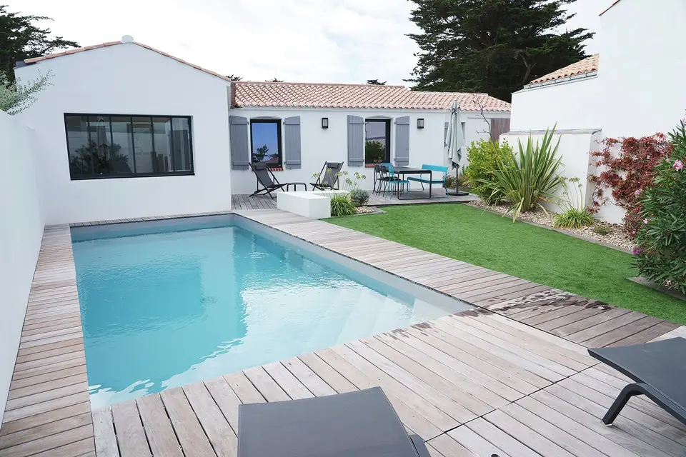
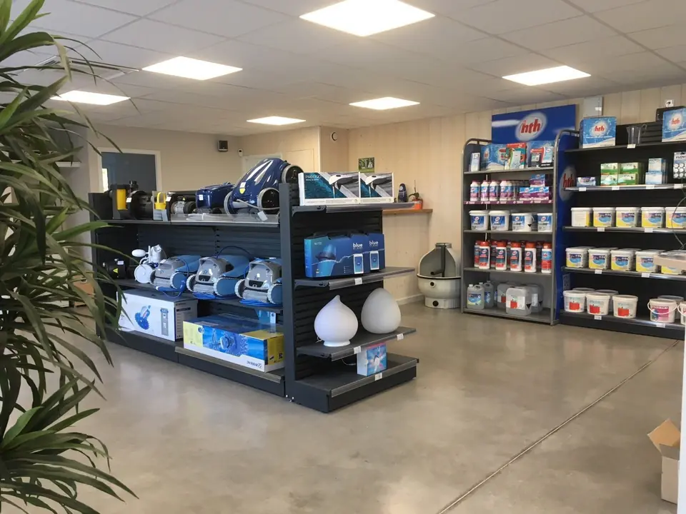
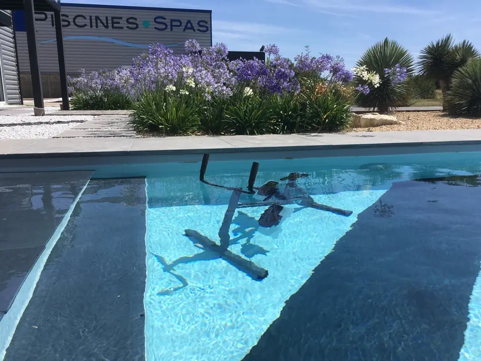
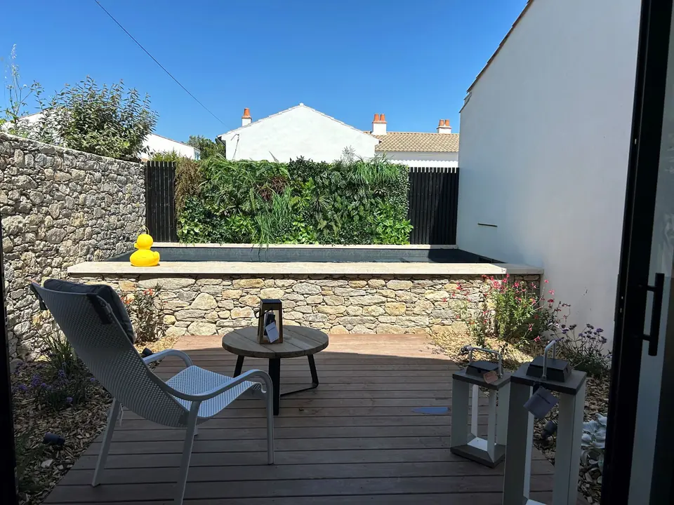
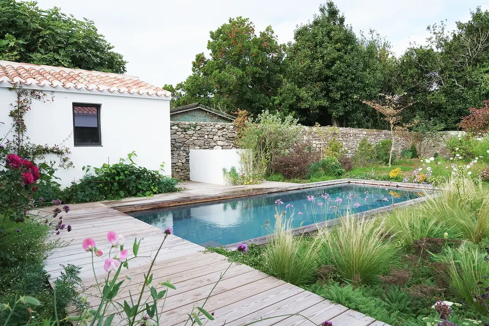

On suit votre piscine de la mise en service à l’hivernage, à Saint-Jean-de-Monts.
Piscines Océanes entretient, dépanne, construit et rénove des piscines depuis 1996. Une équipe de 12 personnes, et un magasin ouvert toute l’année.
4,9 sur 5 sur Google, 117 avis · relevé le 11/11/2026
Appeler le 02 51 59 39 69Du lundi au samedi, 9 h–12 h 30 et 14 h–18 h 30.
L’année de votre piscine
- Début de saisonMise en service
- Pendant la saisonSuivi de l’installation et de l’eau
- Fin de saisonHivernage
Toute l’année, le magasin et l’analyse de votre eau.
Plusieurs formules de contrat, toutes avec la mise en service et l’hivernage.
Pour profiter d’une eau limpide et à bonne température, l’installation et la qualité de l’eau demandent un suivi régulier. Une équipe de techniciens qualifiés s’en charge, de la mise en service à l’hivernage du bassin.
Les contrats d’entretien
Un équipement en panne ?
Nos techniciens, formés au matériel de piscine, diagnostiquent la panne et réparent vos équipements défectueux. Appelez le 02 51 59 39 69.
Le SAVToute l’année, le magasin de la ZAC du Clousis.
Pour mieux vous conseiller, on y analyse votre eau.


Traitement de l’eau
Une large gamme de produits pour votre piscine ou votre spa.
Matériel
Robots, aqua-bikes, matériel et équipements spécialisés.
Spas
Une trentaine de modèles de fabrication américaine, du spa deux places au spa de nage. Plusieurs sont exposés.
Avant la première mise en service, il y a la construction.
Des piscines traditionnelles en structure maçonnée, sur mesure, selon vos souhaits et la configuration de votre jardin. On étudie le projet ensemble.
Et quand le matériel vieillit
On repense le projet avec vous, ou on remplace le matériel par des équipements adaptés, pour remettre la piscine au goût du jour.
La construction et la rénovation

4,9 sur 5 sur Google, pour 117 avis. Une équipe de 12 personnes, à Saint-Jean-de-Monts depuis 1996.
Note et nombre relevés sur la fiche Google de l’entreprise le 11 novembre 2026.
Lire les 117 avis sur GoogleUne mise en service, un hivernage, une panne, un projet ?
Depuis Saint-Jean-de-Monts, l’équipe intervient jusqu’à Saint-Gilles-Croix-de-Vie, Challans et Noirmoutier, pour la construction, la rénovation et l’entretien.
Appeler le 02 51 59 39 69Ou par écrit : contact@piscinesoceanes.fr
Horaires du magasin
- Lundi–samedi
- 9 h–12 h 30 · 14 h–18 h 30
- Dimanche
- Fermé
Adresse
ZAC du Clousis85160 Saint-Jean-de-Monts
Itinéraire vers le magasin
Chèque, carte bancaire, espèces ou virement. Accueil en français ou en anglais.